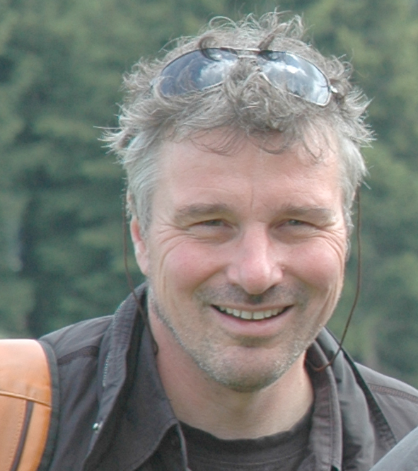
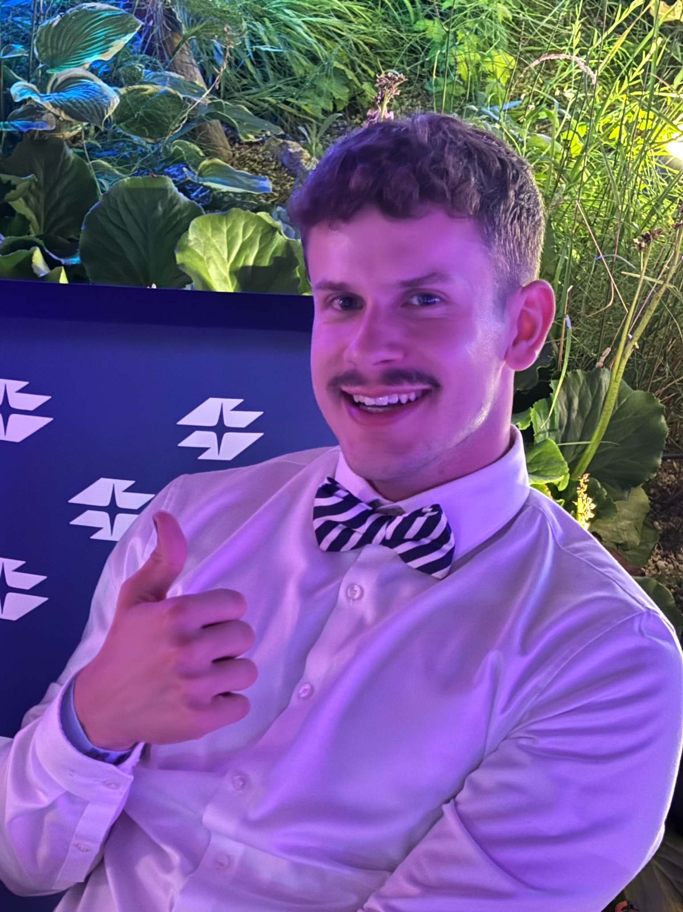

Über uns
Kunstviertel 6 ist ein Kunstverein mit Sitz in Wien-Mariahilf. Wir verbinden künstlerische Praxis mit ästhetischer Bildung und gesellschaftlichem Engagement. Ausgangspunkt ist der sechste Bezirk mit seiner Geschichte, seinen Lebensräumen und den Menschen, die ihn gestalten. Gemeinsam mit lokalen Kunstschaffenden möchten wir Projekte entwickeln, die unterschiedliche Erfahrungen aufgreifen und Begegnungen im Bezirk ermöglichen.
Die Zusammenarbeit mit Schulen und weiteren pädagogischen Einrichtungen gehört zu unserer Ausrichtung. Wir suchen den Austausch mit Lehrpersonen, Fachkräften der Elementarpädagogik und anderen Bildungsakteuren sowie Kooperationen mit Hochschulen und Universitäten. Künstlerische und pädagogische Erfahrungen können dabei zusammenkommen, ohne dass alle Beteiligten in beiden beruflichen Feldern tätig sein müssen. Uns interessiert, wie sie voneinander lernen und gemeinsam Bildungsprozesse gestalten können.
Ästhetische Bildung beginnt für uns beim Wahrnehmen und eigenen Gestalten. Wir möchten Bedingungen schaffen, unter denen Kinder, Jugendliche und Erwachsene Fragen entwickeln, mit Materialien experimentieren und eigene Ausdrucksweisen erproben können. Reformpädagogische Ansätze geben dafür Anregungen: selbstständiges Arbeiten, die Mitgestaltung von Lernprozessen und die Verbindung von Erfahrung und Reflexion. Mit Service-Learning verfolgen wir das Anliegen, Lernen mit einem gemeinsam bestimmten Beitrag zum lokalen Zusammenleben zu verbinden.
Künstlerische Forschung verstehen wir als einen Zugang, um Fragen durch künstlerische Praxis zu untersuchen. Dabei knüpfen wir an Henk Borgdorffs Verständnis einer Erkenntnisgewinnung an, die mit künstlerischen Praktiken verbunden ist (vgl. Borgdorff, 2012). Im Umgang mit Materialien, Bildern, Körpern und Räumen können Erkenntnisse entstehen, die sich zunächst im Handeln oder Wahrnehmen zeigen. Unser Interesse gilt auch dem Wissen, das körperlich verankert ist oder sich nur teilweise in Worte fassen lässt. Die dabei entstehenden Prozesse und Erfahrungen möchten wir reflektieren, dokumentieren und mit anderen teilen.
Welche Themen und Formen unsere Projekte annehmen, möchten wir mit den Beteiligten entwickeln. Die Geschichte Mariahilfs und gegenwärtige Fragen seiner Bewohner*innen bieten dafür konkrete Anlässe. So wollen wir im Bezirk Gelegenheiten schaffen, gemeinsam künstlerisch zu arbeiten, voneinander zu lernen und das lokale Umfeld mitzugestalten.
Literaturbezug: Borgdorff, Henk (2012): The Conflict of the Faculties: Perspectives on Artistic Research and Academia. Leiden University Press.

Rolf Laven
Vorstand
Rolf Laven ist Bildhauer, Kunstpädagoge und Hochschulprofessor an der Pädagogischen Hochschule Wien. Er lehrt außerdem an der Akademie der bildenden Künste Wien und der Universität für angewandte Kunst Wien.
Er studierte Bildhauerei und Kunstpädagogik in Maastricht und Wien und promovierte über Franz Čižek und die Wiener Jugendkunstklasse. Seine Arbeit verbindet kunstpädagogische Forschung mit künstlerischer Praxis und der Zusammenarbeit mit Lernenden verschiedener Bildungsbereiche.
Als Künstler und Kurator realisiert er Ausstellungen und Projekte im öffentlichen Raum. Mit der von ihm initiierten Begegnungszone SPA_LOW_SKY in Mariahilf bringt er Schulen, Kunstschaffende und Nachbarschaft in einen gemeinsamen Gestaltungsprozess.

Hendrik Renneberg
Kassierer
Hendrik Renneberg ist Kunstpädagoge, Doktorand an der Universität zu Köln und als Mittelschullehrer in Wien tätig. Er verfügt über Masterabschlüsse in Kunst und Mathematik.
In seiner Dissertation untersucht er künstlerische Forschung und Heteronormativität in Bildungskontexten. Seine Forschungsinteressen verbinden Performativität, Queer Theory sowie Kunst- und Theaterpädagogik.
Seine künstlerische Praxis umfasst Fotografie, Performance und partizipative Formate zwischen Bildungs- und Ausstellungskontexten. Er beteiligt sich an internationalen Forschungs- und Kunstprojekten und stellt seine Arbeit auf wissenschaftlichen Tagungen und Symposien vor.